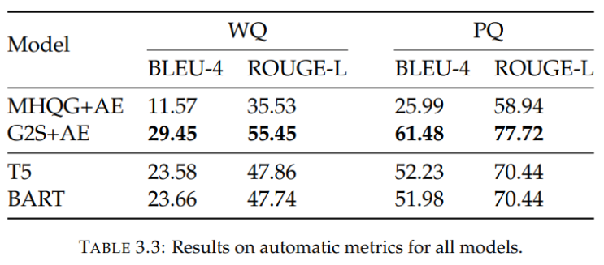

Results

As can be seen in the image, after training the model is able to produce good questions based on a small input graph from the test set.
Autometic metric results

Judging the two PLMs that we used, T5 and BART, we see that on the autometic metrics they were outperformed by previous research.
Human evaluation
But, when we asked people to judge the predicted questions on how natural they were and on how relevent to the input graph they were, we found that our fine-tuned model (T5) outperformed the previous research.
Testing on productional KG
To use our fine-tuned model on large graphs like the one below, we first had to split up the graph into smaller subgraphs, since our model was trained to only handle smaller graphs. This also allowed us to generate multiple questions for one large knowledge graph, which is useful since our goal was to produce a lot of training data for these graphs.
As we can see in the image below, when the model was fed one of the extracted subgraphs, it had a bit more trouble coming up with a good question. This is likely because of the fact that these graphs are formulated in a much different way than its training graphs, where the graph edged contained much more specific information instead of meta types of relations like 'value' and 'yields'